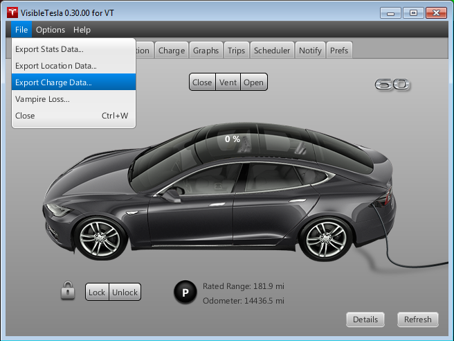
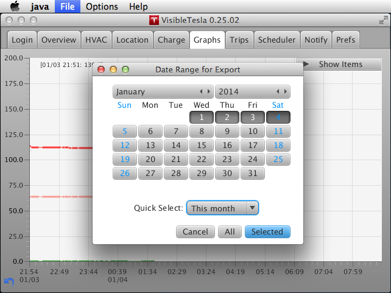
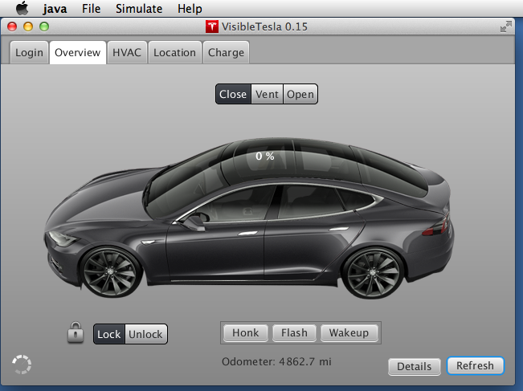
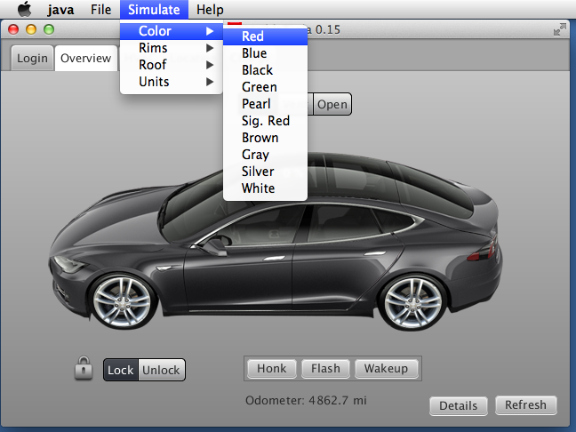
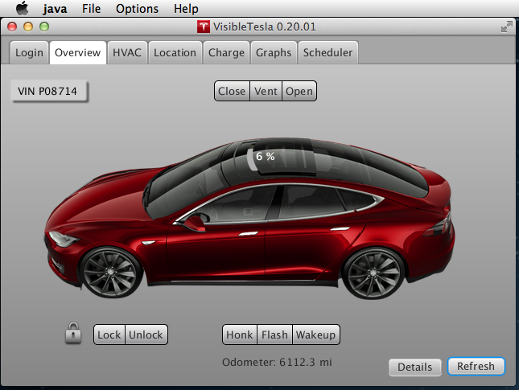

Other Topics
Exporting Your Data
You can export the data collected by VisibleTesla to an Excel file for your own analysis. There are two sets of data you can export:
- Statistics: The data that was gathered for the Graphs Tab. You can export this data using File→Export Stats Data... menu item.
- Locations: The data that was gathered for the Location Tab. You can export this data using File→Export Location Data... menu item.
In either case you'll be prompted to choose a location and name for the exported file. Be sure to use the extension ".xls"; for example, MyStats.xls. The screen shot below shows the Export menu items.
After you choose a file and location, you'll be asked how much of your data you want to export. You can select a range of days on the calendar by selecting the starting day then holding down the shift key and selecting the ending day. You can use the Quick Select dropdown list to easily select some common ranges. Once you've selected your range, press the Selected button. If you want to export all of your data, you don't need to bother with the calendar, just press the All button. To abort the export process, hit the Cancel button. This screen shot shows the dialog box that allows you to select a date range.

When you open an exported file in Excel, you'll see a column corresponding to the time at which each reading was taken and a column for each type of data collected. The time column contains a long, unintelligible number which is an accurate, though obscure, way to keep track of time down to the millisecond. You'll notice that the last column has a version of the timestamp represented as a human-readable date. The table will look something like the one below (a sample of the stats data):
| TIMESTAMP | C_AMP | C_BAM | C_EST | C_ROC | C_SOC | C_VLT | S_PWR | S_SPD | |
|---|---|---|---|---|---|---|---|---|---|
| 1377743292 | 0 | 99.7 | -1 | 55 | 0 | 24 | 14 | 8/28/13 18:28:12 | |
| 1377746306 | 0 | 99.3 | -1 | 50 | 0 | 21 | 16 | 8/28/13 19:18:26 |
You may notice that some entries are blank. This is normal and can happen for a number of reasons. For example, the car may not have provided readings for that statistic at that time.
Data Collection and Auto-Refresh
Many of the Tabs in VisibleTesla collect data of one type or another to do their job. The Location Tab collects location-related data, the Charge Tab collects charge-related data, and so on. They only collect this data when they are the selected tab. For example, while you are viewing the Charge Tab it is collecting charge data, but as soon as you switch to the Location Tab, the Charge Tab stops collecting data and the Location Tab starts. A number of tabs don't collect any data (e.g. Login, Prefs). Some tabs collect data only as needed (e.g. Scheduler).
The Graphs Tab is special - it collects data even when you aren't viewing it. It's also opportunistic. It watches the data being collected by other Tabs and looks for anything it can use. In normal circumstances the Graphs Tab collects data every two minutes. If it sees your car in motion, it starts collecting data every 30 seconds. If your car stops, it continues collecting data every 30 seconds for a couple of minutes in case you're at a stop light or something like that. Eventually it will rever to collecting data at 2 minute intervals.
When viewing any tab you may refresh the displayed data by pressing the Refresh button. If you don't press the button, the app will automatically refresh the information every 30 seconds. Switching tabs automatically refreshes the newly selected tab. The screen shot below shows the "spinner" that is displayed when the app is communicating with your car.
The Location Tab is a little different from the others. It auto-refreshes like other tabs, but when the car is in motion it uses a special feature called "Streaming" that allows it to collect data at a higher rate without overloading Tesla's servers.

Speaking of overloading Tesla's servers, VisibleTesla automatically monitors the rate at which it makes requests. If you manually press refresh multiple times in rapid succession, you may find that the spinner rotates for a longer than usual. The app is automatically slowing down its requests to Tesla's servers in order to remain a good citizen. The app may also choose to refresh certain items less frequently than others. For example, the odometer reading on the Overview Tab. Since even at 60 mph the reading doesn't change much every minute, the app does not update it on every auto-refresh.
Simulation
The simulation menu can be found within the Options menu. It allows you to look at car configurations other than your own. These screen shots show changing the color to red and using 21" dark rims.
